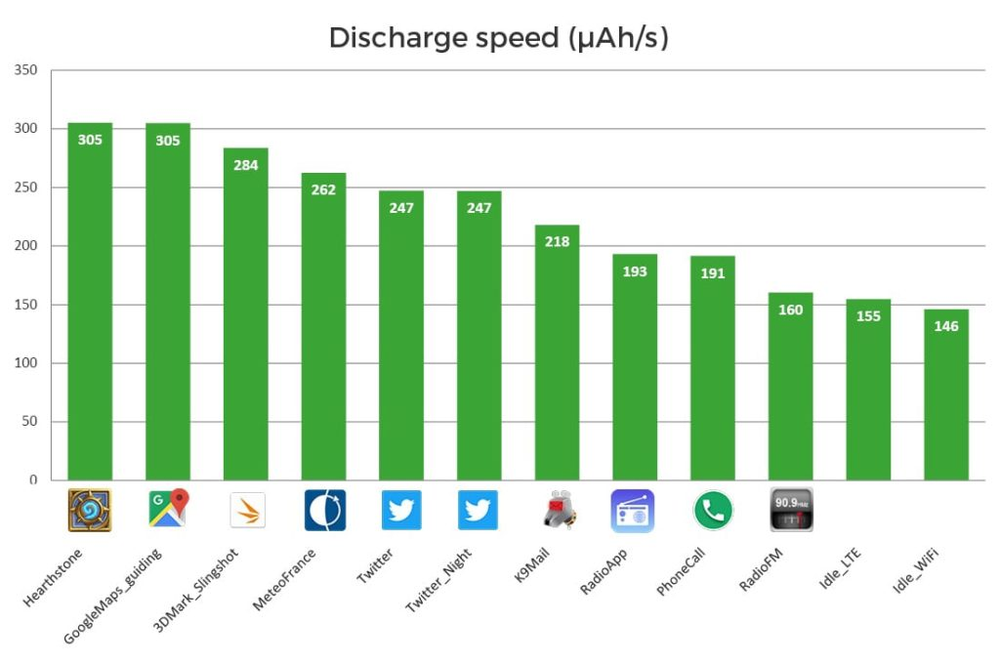
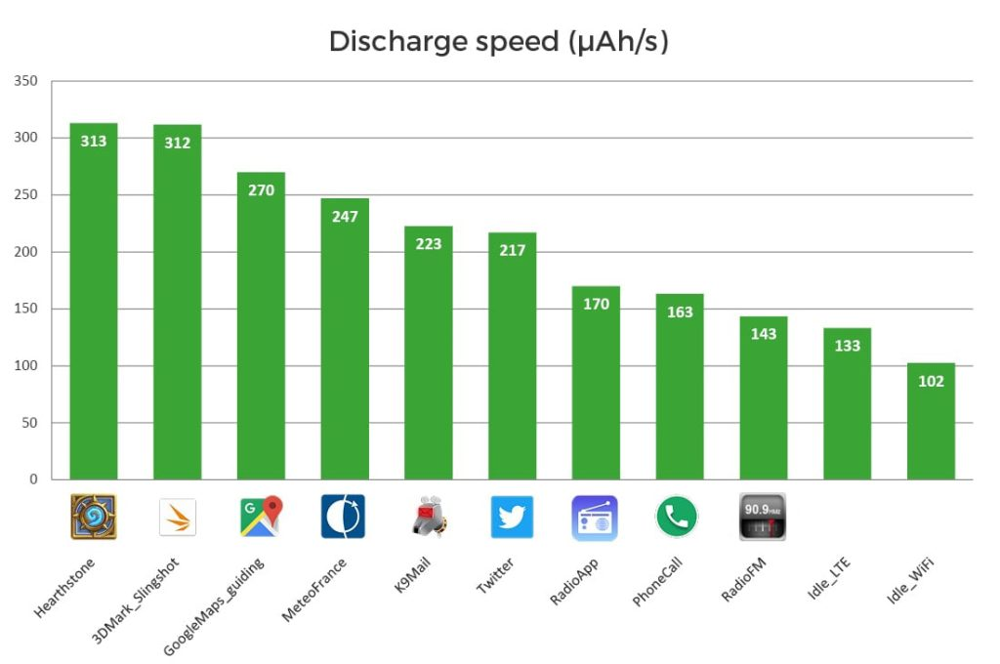

There has been a lot of noise recently about Android’s newest version 8 “Oreo”. However, a lot of people out there are still using older versions, and may be wondering if the new versions are worth the upgrade. I’ve been confronted with this choice on my Fairphone2 running Android 5.1. Should I upgrade it to Android 6 Marshmallow? Google claims that Android 6 will get you more battery life. Let’s check that, shall we!
Never install an update without first checking that you actually need it
You know how people can heavily rely on their smartphone nowadays. I’m no exception to that. I’ve been intensively using my Fairphone2 for over a year now, and I must say that I’m pretty happy with it. Except for the very few occasional crashes (but no more than on my previous device), it has become my trusted everyday companion.
When I got it, it shipped with Android 5.1 (Lollipop). The Fairphone team is doing its job properly and a few months later, they proposed an upgrade to Android 6 (Marshmallow).
But Hey, come on… I’ve been in the IT business for quite a while now, and an IT user for even longer (my first OS had a blue background). As much as I love getting the latest version of pretty much anything, I’ve developed a healthy habit: never install an update without first checking that I really need it.
What about this battery consumption claim?
Part of this habit is based upon the «if it ain’t broke, don’t fix it» approach, and the other part is defiance. OK, this update will bring nice features, and maybe I will actually need some of them. But what would be the cost of it? Will this update increase the footprint of the software (bigger memory? disk size? CPU needs? And what about battery consumption?…).
I had already checked the novelties included in Android 6 and decided that none of those were interesting enough for me to jump in. However there was still one interesting claim: Android 6 was supposed to lower the battery consumption of the OS, thus allowing longer battery life.
So, prior to upgrading, I needed to know if this claim was true.
Let’s look into this
This is where working for a company which specialty is metering battery consumption of mobile devices comes in handy. Folks in the office next door spontaneously developed an energy probe for the Fairphone2 after I threatened to join the company choir, and they even let me play with a crude but simple version of a battery monitoring app. (Before you ask: no, this is not available for sale (yet), it’s only an internal lab thing. For now.)
So, during a few days, I was able to monitor the battery consumption of my Fairphone2 when making Phone Calls, when using the apps I use on a daily basis, and also some others just for the experiment: K9-Mail, Twitter, Meteo France (France’s official weather app), and I tossed in a few games on Hearthstone (“work hard, play hard” they say) and listened to the FM Radio through the built-in antenna and app, and through some randomly picked internet Radio App.
I started by measuring under Android 5.1. Then I upgraded the OS to Android 6, and did a second run of measures. Please note that the applications have not been upgraded in the process: we’re talking OS only here.
These measures have led me to some interesting findings. I’ve been able to check whether Marshmallow really lowers battery consumption or not, and I also got some insights about individual applications behavior.
Rankings my everyday apps
The first set of measures I ran under Android 5.1 led to these findings.
All values are given in µAh/s. These are “microAmpere.hour per second”. As the Fairphone2 has a battery capacity of 2,400 mAh, this means an app with a discharge rate of 300 µah/s will drain the battery in a little more than 2 hours.
• The discharge speed for my use cases vary in range 146 to 305 µAh/s
• Some notable values:
- Hearthstone : 305
- Twitter : 247
- Phone call : 191
- Radio (built-in FM): 160
- Idle (doing nothing but not in sleep mode, screen is on): around 150
The full list of tests cases is as seen on the graph.

Casual findings: about Twitter and FM radio
By looking at these values, we get some unexpected insights:
- Twitter with the Night Mode on doesn’t save any energy over Twitter with the default white background: OK, this is consistent with the Fairphone2 screen technology – read more about this)
- Listening to the radio through built-in FM consumes 20% less battery than a random internet Radio app. Of course you only get your local stations, but depending on what you want to listen to, you are better off using this built-in FM.
Is Android 6 improving my battery life?
Well, it’s time to answer this question. Let’s upgrade the phone and run these measures again. Now here is what we get:
• Average discharge speed varies in range 102 to 313 µah/s
• Some notable values:
- Hearthstone : 313
- Twitter : 208
- Phone call : 163
- Radio (built-in FM) : 143
- Idle : 102 to 134

I had a look at the other metrics: it seems like the processor is better managed. We get around 9% less CPU used by the system when the phone is idle. CPU-intensive apps also have better performances: I get a test score of 1,058 at 3DMark Slingshot with Android 6, vs 912 with Android 5.1) but this happens at the cost of an increase in energy consumption: +10% discharge rate for 3DMark.
Conclusion
In most cases, Android 6 brings a significant energy gain: around 5% to 15%. Beware though when using CPU-intensive apps, you’ll get better performances but at the cost of more battery consumption from these apps.
So, will I keep Marshmallow on my device? Yes.